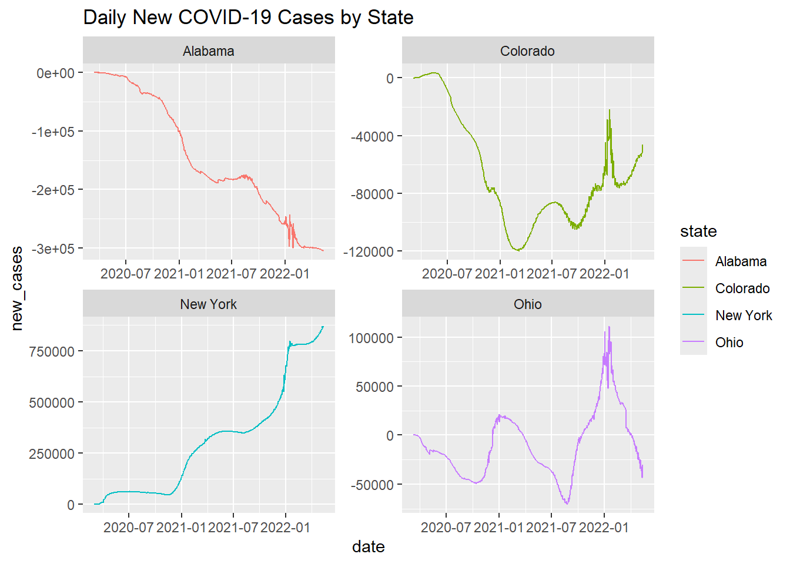

── Attaching core tidyverse packages ──────────────────────── tidyverse 2.0.0 ──
✔ dplyr 1.1.4 ✔ readr 2.1.5
✔ forcats 1.0.0 ✔ stringr 1.5.1
✔ ggplot2 3.5.1 ✔ tibble 3.2.1
✔ lubridate 1.9.4 ✔ tidyr 1.3.1
✔ purrr 1.0.2
── Conflicts ────────────────────────────────────────── tidyverse_conflicts() ──
✖ dplyr::filter() masks stats::filter()
✖ dplyr::lag() masks stats::lag()
ℹ Use the conflicted package (<http://conflicted.r-lib.org/>) to force all conflicts to become errors
Attaching package: 'flextable'
The following object is masked from 'package:purrr':
compose
data =read_csv('https://raw.githubusercontent.com/nytimes/covid-19-data/master/us-counties.csv')
Rows: 2502832 Columns: 6
── Column specification ────────────────────────────────────────────────────────
Delimiter: ","
chr (3): county, state, fips
dbl (2): cases, deaths
date (1): date
ℹ Use `spec()` to retrieve the full column specification for this data.
ℹ Specify the column types or set `show_col_types = FALSE` to quiet this message.
Here is how I created an object called my.date set as “2022-02-01” and an object called my.state, set as “Colorado”
Here is the code I used to make a table of the data using the flextable function.
covid_most_cumulative_table <-flextable(covid_most_cumulative) %>%add_footer_lines("Top 5 counties in Colorado with the most cumulative COVID cases on 2022-02-01") %>%set_caption("Table 1: Most cumulative COVID cases") %>%set_table_properties(layout ="autofit", width =0.5) %>%align(align ="center", part ="all") covid_most_cumulative_table
county
cases
El Paso
170,673
Denver
159,022
Arapahoe
144,255
Adams
126,768
Jefferson
113,240
Top 5 counties in Colorado with the most cumulative COVID cases on 2022-02-01
Here is the code I used to generate a table showing the top 5 counties with the most new cases
Here is the code I used to generate a table of the data using flextable
covid_new_cases_table <-flextable(covid_new_cases) %>%add_footer_lines("Top 5 counties in Colorado with the most new cases on 2022-02-01") %>%set_caption("Table 2: Most new COVID cases") %>%set_table_properties(layout ="autofit", width =0.5) %>%align(align ="center", part ="all")covid_new_cases_table
county
new_cases
El Paso
630
Arapahoe
401
Denver
389
Adams
326
Jefferson
291
Top 5 counties in Colorado with the most new cases on 2022-02-01
Question 3: Normalizing Data I used the code to complete the following tasks:
I used the following code to read the population data
Rows: 3195 Columns: 67
── Column specification ────────────────────────────────────────────────────────
Delimiter: ","
chr (5): SUMLEV, STATE, COUNTY, STNAME, CTYNAME
dbl (62): REGION, DIVISION, ESTIMATESBASE2020, POPESTIMATE2020, POPESTIMATE2...
ℹ Use `spec()` to retrieve the full column specification for this data.
ℹ Specify the column types or set `show_col_types = FALSE` to quiet this message.
I used the following code to: - Converted the STATE numeric into a character forced to 2 digits with a leading 0 (when needed) - Converted the COUNTY numeric into a character forced to 3 digits with leading 0’s (when needed) - Created a FIP variable the STATE numeric into a character forced to 2 digits with a leading 0 (when needed)
The dataframe “population_data_2021” has 49,463 rows and 19 columns. It has the same counties and states as the data covid frame but is the columns are named differently. It has data for total births and deaths separated into different categories.
Here is the code I used to find the range of populations in Colorado counties in 2021. The range was between 741 and 737287 people
range(population_data_2021$POPESTIMATE2021)
[1] 741 737287
Here, I filtered the covid data to only contain the data for 2021.
Here is the code I used to generate a table with the most cumulative cases per capita
per_capita_county_summary_table <- per_capita_county_summary %>%select (county, total_cumulative_cases_per_capita) %>%arrange(desc(total_cumulative_cases_per_capita)) %>%slice_head(n =5) per_capita_county_summary_table <-flextable(per_capita_county_summary_table) %>%add_footer_lines("Top 5 counties in Colorado with the most cumulative cases per capita on 2022-02-01") %>%set_caption("Table 3: cumulative cases per capita") %>%set_table_properties(layout ="autofit", width =0.5) %>%align(align ="center", part ="all")per_capita_county_summary_table
county
total_cumulative_cases_per_capita
Crowley
0.5117698
Bent
0.4118749
Pitkin
0.3429659
Lincoln
0.3424082
Logan
0.3047701
Top 5 counties in Colorado with the most cumulative cases per capita on 2022-02-01
Here is the code I used to create a table of the top five counties in colorado with the most new cases in 2021
per_capita_county_new_cases <- per_capita_county_summary %>%select (county, total_new_cases_per_capita) %>%arrange(desc(total_new_cases_per_capita)) %>%slice_head(n =5) per_capita_county_new_cases <-flextable(per_capita_county_new_cases) %>%add_footer_lines("Top 5 counties in Colorado with the most new cases per capita on 2022-02-01") %>%set_caption("Table 3: new cases per capita") %>%set_table_properties(layout ="autofit", width =0.5) %>%align(align ="center", part ="all")per_capita_county_new_cases
county
total_new_cases_per_capita
Crowley
0.009764603
Bent
0.004120622
Sedgwick
0.003869304
Washington
0.002875924
Las Animas
0.002651039
Top 5 counties in Colorado with the most new cases per capita on 2022-02-01
Question 5
I could not figure out how to answer the question.
Question 6
Here is the code I used to 1. filter the data to the four states of interest and and calculate the number of daily new cases and the 7-day rolling mean 2. Make a facet plot of the data.
`summarise()` has grouped output by 'state'. You can override using the
`.groups` argument.
ggplot(state_data, aes(x = date, y = new_cases, color = state)) +geom_line() +facet_wrap(~ state, scales ="free") +labs(title ="Daily New COVID-19 Cases by State")

I could not figure out the last part of this question.
Question 7
Here is the code I used to calculate the Weighted Mean Center of the COVID-19 outbreak in the USA. I am not sure why the points are not on the map. I tried to filter it to just the longitude and latitude of the USA but I could not get that to work.
Rows: 3221 Columns: 3
── Column specification ────────────────────────────────────────────────────────
Delimiter: ","
chr (1): fips
dbl (2): LON, LAT
ℹ Use `spec()` to retrieve the full column specification for this data.
ℹ Specify the column types or set `show_col_types = FALSE` to quiet this message.
data_temp <- data %>%mutate(month =format(as.Date(date), "%m"))county_centroids_joined <- data_temp %>%left_join(county_centroids, by ="fips")weighted_mean_center <- county_centroids_joined %>%group_by(date) %>%summarise(total_cases =sum(cases, na.rm =TRUE),weighted_LON =sum(LON * cases, na.rm =TRUE) / total_cases,weighted_LAT =sum(LAT * cases, na.rm =TRUE) / total_cases )ggplot(weighted_mean_center, aes(x = weighted_LON, y = weighted_LAT, color =factor(format(as.Date(date), "%m")), size = total_cases)) +geom_point(alpha =0.7) +borders("state", fill ="gray90", colour ="white") +scale_color_viridis_d() +labs(title ="Weighted Mean Center of COVID in the USA",x ="Longitude", y ="Latitude",color ="Month", size ="Total Cases",caption ="Source: County-level COVID-19 Data and Centroids") +theme_minimal() +theme(legend.position ="bottom")